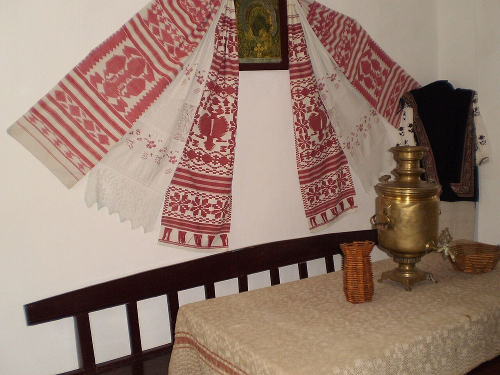

Альбом взірців: звідки брати українське для Люстерка
Шість попередніх робіт про айдентику писались із текстів. Тут до кожного напрямку, який вони називали, знайдено справжні речі — рушник, сорочку, книжку, будинок, миску — і кожну розглянуто як зображення: що в ній де стоїть, скільки чого, якого вона кольору насправді.
Як читати аркуш. Спершу — що про напрямок казали тексти й чого з них не видно. Далі взірці: знімок, підпис зі сторінки джерела, побачене, виміри й кольори, зняті з пікселів знімка (світло музею й вік фотографії їх зсувають — це кольори знімка, а не нитки). Потім два висновки: що робить річ красивою і яку роботу вона могла б нести в продукті. Наприкінці — проба перенесення поруч зі взірцем: у ній нема нічого, намальованого з пам'яті, — лише обводи, зняті програмою з того самого знімка, його кольори й виміряні пропорції.
Права. У репозиторії лежать лише зменшені копії знімків, для яких сторінка джерела прямо називає вільну ліцензію; автор і ліцензія — під кожним знімком і в таблиці «взірці/джерела.md». Роботи сучасних дизайнерів і музейні знімки без вільної ліцензії — лише посиланням і описом побаченого.
Рушник
довге полотно, де повітря більше, ніж узору
Що було в текстах. Claude й Fable: вузьке довге полотно, оздоба на кінцях, 2–3 яруси між стрічками, «лише червоний і білий»; кролевецькі — ромби, восьмикутні зірки, «дерево роду». Зведення взяло з цього «одне полотно з ярусами й кінцем», а мотиви відкинуло як прикрасу.
Чого там не видно. Жодного рушника. Не видно, скільки полотна порожнє, яке саме червоне, як рушник висить і що з нього бачать першим.

Рушник кролевецький тканий, обрядовий, 1839 рік (фрагмент)
Кролевець (Сумщина), переборне ткацтво, льон; на знімку етикетка музею: «рушник, фрагмент … 1839 рік». Знімок: Viktoriya Havrylenko, Wikimedia Commons.
Джерело: сторінка файлу · знімок: Viktoriya Havrylenko · права: CC BY-SA 4.0 · підпис на сторінці: «Рушник кролевецький тканий, обрядовий. 1839 рік»
Побачене
- Червоне тут не червоне: марена за майже двісті років стала сухою трояндою (#A97975–#B7928E) на небіленому полотні (#E2DAD2). Жодної плями суцільного кольору — крізь кожну фігуру просвічує біла основа, тож червоне лежить серпанком, а не заливкою.
- Верхні 55 % довжини майже порожні: у смугах між бордюрами червоного 1–8 % площі. Там стоять поодинокі фігури в один ряд — шість «вазонів» на ширину, двоголовий орел із короною — і між рядами багато полотна. Нижні 45 % густішають до 20–60 %: ряди зірок, потрійні стрічки, знов орли. Рушник читається як наростання, а не як рівний узір.
- Між ярусами не лінія, а «бігунець»: два ряди скошених ромбиків, зсунутих на півкроку, — око бачить скручений шнур. Суцільна потрійна стрічка з'являється лише в густій частині, ближче до кінця.
- З боків — стовпчик шашечки завширшки близько 9 % полотна з кожного боку; у густій частині його перебивають стрічки на всю ширину.
- Усі косі лінії — східці: найменша частинка узору — прямокутничок перебору, і з нього складено і крило орла, і корону, і цифру. Плавної кривої нема жодної.
- Унизу, на голій смузі між двома тонкими лініями, виткано рік і літери. На знімку вони читаються дзеркально: «1839 · П М» (або річ знято зі звороту, або ткаля набирала узір з вивороту). Цифри зроблено не так, як фігури: тонкою лінією в одну нитку, з ромбиками-крапками між групами. Смуга підпису вища за будь-який ярус узору — це найпорожніше місце в густій частині.
Виміри. Частка червоного по довжині виміряна на 40 смугах без бічних бордюрів (схема нижче). Межа рідкого й густого — на 55 % довжини знімка: до неї 1–14 %, після неї 18–62 %.
Скільки на рушнику 1839 року узору: згори майже порожньо, до кінця густішає. Смуг 40, згори вниз; довжина риски — частка узору в смузі.
Колір із пікселів
За чим упізнають. Прибрати порожнє поле й лишити самий густий кінець — вийде килимок; прибрати східці — вийде вишивка гладдю. Рушник тримається на трьох речах разом: довге біле, наростання до кінця, східчаста фігура.

Рушник кролевецький тканий, обрядовий, початок ХХ ст.
Кролевець (Сумщина), початок ХХ ст. Знімок: Viktoriya Havrylenko, Wikimedia Commons.
Джерело: сторінка файлу · знімок: Viktoriya Havrylenko · права: CC BY-SA 4.0 · підпис на сторінці: «Рушник кролевецький тканий, обрядовий. Початок ХХ ст.»
Побачене
- Верхня третина — три рядки на голому полотні: «колоски»-стрілки, що всі летять ліворуч, між ними рядок косих рисок. Рядок займає 30–40 % червоного, між рядками — нуль. Це найтихіша частина рушника, і саме вона опиняється посередині, коли його вішають.
- Далі одразу густо, 40–70 %: два «вазони» обабіч суцільного червоного стовпа, пачки з трьох-чотирьох стрічок, і між пачками — вузькі кольорові пояски.
- Тут уже фабричні барвники: до ясного червоного (#B20C0D) додано фіалковий, малиновий і оливковий — і вони потекли. Малинові плями на білому поруч із фігурами — не узір, а фарба, що розійшлась під час прання. Через сто років це найживіше місце речі.
- Головна фігура — дерево з червоною кроною і двома оливковими листками; обабіч нього стовпчики в клітинку. Листок і крона виткані «ялинкою»: видно напрям кожної нитки.
- У густому кінці між пачками червоних стрічок лежать пояски з трьох розеток — червоної, фіалкової й малинової; оливкові рисочки між ними — листя. Червоні стрічки не рівні: кожна має ледь зубчастий край від перебору.
Виміри. На знімку рядок стрілок заввишки близько 2 % довжини, проміжок між рядками — близько 6 %: порожнього втричі більше, ніж узору. Рідке : густе по довжині ≈ 1 : 2.
Рушник початку ХХ ст.: три рядки на порожньому, далі одразу густо. Смуг 40, згори вниз; довжина риски — частка узору в смузі.
Колір із пікселів
За чим упізнають. Три рядки стрілок на порожньому полотні: їх досить, щоб упізнати рушник, навіть коли густого кінця не видно.

Настільник кролевецький тканий, обрядовий, 1892 рік
Кролевець (Сумщина), 1892. З колекції Музею кролевецького ткацтва, фото надала І. Пурига (за сторінкою джерела). Знімок: Viktoriya Havrylenko, Wikimedia Commons.
Джерело: сторінка файлу · знімок: Viktoriya Havrylenko · права: CC BY-SA 4.0 · підпис на сторінці: «Настільник кролевецький тканий, обрядовий, 1892 рік. З колекції Музею кролевецького ткацтва. Фото надала І.Пурига»
Побачене
- Протилежність рушникові: порожнього поля нема. Червоного рівно половина — 51–53 % у кожній смузі згори донизу. Око вже не знає, що фігура, а що тло: білі ромби на червоному чи червоні орли на білому.
- Сітка: ромби в шаховому порядку, у кожному другому — двоголовий орел, у решті — ромб із дрібною сіточкою всередині. Уздовж обох країв іде стовпчик маленьких птахів дзьобом до середини.
- Унизу, між узором і бордюром, виткано рядок: «1892 · ГС · В · П · Е · В ✚ РОСИХ» — рік, літери й хрест. Літери тієї ж східчастої будови, що й орли.
- Бордюр — зубці трикутниками назовні; за ним край полотна ще на палець білий.
Виміри. Частка червоного — 49–54 % у кожній із 20 смуг (схема нижче).
Настільник 1892 року: узору рівно половина по всій довжині. Смуг 20, згори вниз; довжина риски — частка узору в смузі.
Колір із пікселів
За чим упізнають. Рівні 50 на 50 і підпис із роком унизу. Це узір для столу, на який дивляться згори й зблизька; на стіні він рябить.


Рушники над іконою на покуті, меморіальний музей Пантелеймона Куліша «Ганнина Пустинь»
Мотронівка (Чернігівщина), експозиція музею. Знімок: Швітланьо, 2010, Wikimedia Commons.
Джерело: сторінка файлу · знімок: Швітланьо · права: CC BY-SA 3.0 · підпис на сторінці: «Panteleymon Kulish Museum Українська: Історико-меморіальний музей-заповідник «Ганнина Пустинь»»
Побачене
- Рушник висить не рівно: середина лягає на верх образа й ховається за ним, а два кінці розходяться донизу, як перевернута літера V. Найгустіший ярус опиняється на рівні очей людини, що сидить на лаві.
- Рушників три, один на одному: тканий кролевецький зверху, під ним білий вишитий із мереживним краєм. Видно сім кінців — і жодної середини.
- Порожнє поле, якого на розстеленому рушнику найбільше, на стіні зникає зовсім. Те, що в музейній вітрині — 55 % речі, у хаті — складка за іконою.
Колір із пікселів
За чим упізнають. Два кінці, що розходяться від однієї речі посередині. Обрамлюють не екран по колу, а одну річ — згори.
Вишитий рушник навколо ікони, Музей українського рушника (Переяслав)
автора знімка сторінка не називає, завантажено 2016. сторінка джерела. Права: CC BY-SA 3.0; лише посиланням, бо сторінка не називає автора.
_9.jpg){kind=link}
Вишитий рушник із червоними трояндами й чорним листям перекинуто через образ: середина біла й схована, кінці розходяться донизу й закінчуються густою смугою. За ним стіну вкрито тканими рушниками рівно, смугами, — і поруч із тим, що висить «живо», вони стають шпалерами.
Візуальний сенс
- Рушник красивий не узором, а тим, скільки довкола узору полотна. На взірці 1839 року понад половину довжини майже порожня; узір густішає лише до кінця. Усі попередні ескізи брали з рушника смугу орнаменту — тобто саме ту частину, якої в ньому найменше.
- Червоне старого рушника — припорошене, з білим усередині: марена на льоні (#A97975), а не #D00000. Ясне червоне — це вже фабрична нитка початку ХХ ст. Обидва справжні, але вони дають різний настрій: перше поруч із фото одягу мовчить, друге сперечається з червоною сукнею.
- Форма — східці. Перебір не вміє вести криву, тому і птах, і цифра, і вазон складені з прямокутничків. На екрані це переноситься без втрат: піксель і перебір — та сама сітка.
- Гине без матеріалу: серпанок (біла основа крізь червоне), патьоки барвника, нерівний край. Плоска заливка замість серпанку — і це вже наліпка.
Функціональний сенс для Люстерка
- Рушник живе у двох станах. Розстелений — довга річ із наростанням: тихий початок, густий кінець, унизу рік і літери. Повішений — складка посередині й два кінці обабіч однієї речі.
- Перше дає хід розмови з наростанням: що далі до образу, то густіше; кінець полотна — підпис із датою (як виткане «1839 · П М»), а не просто смуга. Зведення вже мало «кінець полотна» — взірець додає, що там стоять рік і ім'я.
- Друге дає спосіб показати одну річ: фото жінки чи образ тримає згори «перекинутий» рушник, кінці якого спускаються обабіч. Середини не видно — отже над фото нема нічого, крім складки.
- Три рядки стрілок на порожньому — готова форма для чекання збирання: рядок з'являється, між рядками порожньо, і всі стрілки летять в один бік.
Перенесення поруч зі взірцем
чекання, поки збирається образ
Чекання: три рядки на порожньому
зі взірця: Рушник кролевецький тканий, обрядовий, початок ХХ ст.
- Обводи стрілок і рисок зняті програмою зі знімка (сітка 88 клітин на ширину), колір — #B20C0D із того самого знімка, тло — колір його полотна.
- Порожнього між рядками втричі більше, ніж узору, — як на рушнику. Рядки з'являються по одному: збирання триває кілька хвилин, і кожен рядок — ще один переглянутий шар одягу.
- Чого бракує: на взірці рядків три, а кроків збирання буває більше; треба шукати на інших рушниках, які ще рядки стоять у порожньому полі.
одна річ під перекинутим рушником
Одна річ під перекинутим рушником
зі взірця: Рушники над іконою на покуті, меморіальний музей Пантелеймона Куліша «Ганнина Пустинь»; Рушник кролевецький тканий, обрядовий, початок ХХ ст.
- Так рушник висить на покуті в музеї Куліша: середина — складка над образом, два кінці розходяться обабіч. Обрамлено одну річ, а не екран.
- Працює для знайомства (фото жінки) і для готового образу. Поруч із фото одягу два червоні кінці — сильний сусід: з червоною чи картатою річчю вони сперечаються. Тому — лише в ті дві хвилини, коли на екрані одна головна річ, і вужчими, ніж тут.
- Чого бракує: вирізка зі знімка — не графіка продукту. Щоб це стало мовою, кінець треба перевести в обвід, як стрілки, і перевірити на справжніх фото з каталогу.
кінець полотна: густішає і підписується
Кінець полотна: густішає і підписується
зі взірця: Рушник кролевецький тканий, обрядовий, 1839 рік (фрагмент)
- Риски — виміряна частка узору в останніх 20 смугах рушника 1839 року, без округлення; колір — його вицвіла марена #A97975 на його ж полотні #E2DAD2.
- Підпис — обвід витканого «1839 · П М» з того самого знімка. У продукті на цьому місці стоять день, коли зібрано образ, і ім'я — збережений образ стає підписаною річчю, а не карткою в списку.
- Вицвілий колір поруч із фото одягу мовчить: це найтихіший із червоних, які знайшлись.
Чого не брати
- Суцільну смугу орнаменту вздовж краю екрана: у рушника так не буває, бордюр-шашечка йде лише вздовж густої частини.
- Чисте #FF0000 і заливку без просвітів.
- Двоголового орла: мотив чесний для Кролевця ХІХ ст., але сьогодні читається як чужий герб.